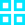
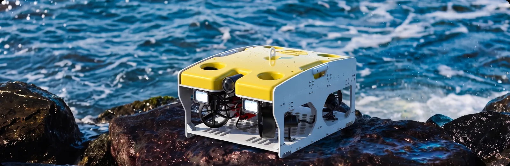
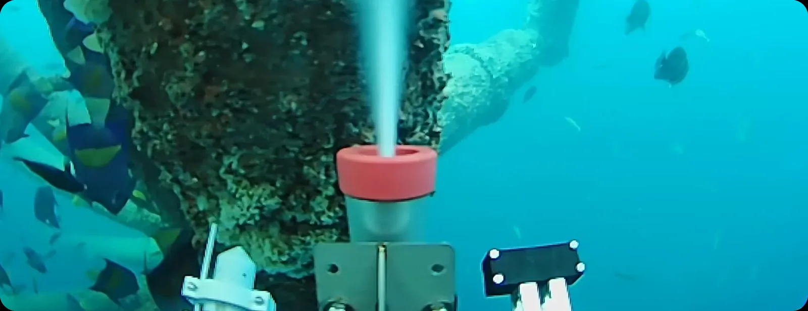
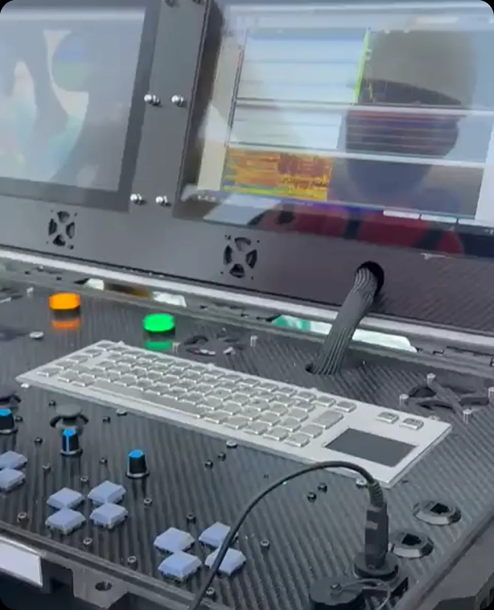
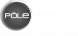

Seabot ROV Platform
The core of our ecosystem. Professional-grade inspection-class ROV with modular plug-and-play architecture.
Learn MoreWe make offshore inspection safer, smarter, and more accessible
We collect and structure underwater asset data across pipeline, hull, and offshore infrastructure, delivering georeferenced inspection records. Every deployment builds a continuous asset history, giving operators the structured data they need to make informed maintenance decisions.

The core of our ecosystem. Professional-grade inspection-class ROV with modular plug-and-play architecture.
Learn MoreSwitch between UT, PAUT, and Eddy Current sensors in minutes on deck.
Learn MoreAutomated reporting and georeferenced data streams for every dive.
Learn MoreReal-time georeferenced inspection data streams into a unified digital twin platform. Anomaly detection, predictive maintenance scoring, and full inspection traceability giving operators actionable intelligence on every structure, every dive.
27.5 km -
68/100
100 individual points - 67 findings
53% Damage - Spalling, Degradation & Exposed Steel
85% Soft - 3% Hard
Fully Shape Degradation
Severely Demaged or Missing
II
ASTM E797
Non-functional - Majority of anodes depleted
Post-UT report - API 579-1
Within 12 Months
One team, one platform, five inspection methods, delivering structured, decision-ready data from every offshore inspection.

GVI, wall thickness measurement, corrosion mapping, weld inspection, and CP survey, all from the same modular platform, swapping payloads instead of swapping vehicles.
Every dive returns geo-referenced, structured findings, ready to act on, not hours of raw footage to review.




Tell us about your asset. Our engineering team will
design a custom robotic inspection plan to provide the data you need.